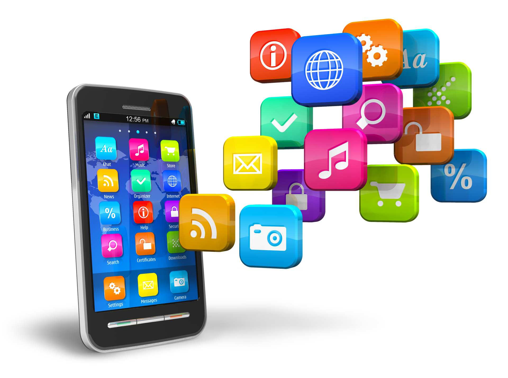
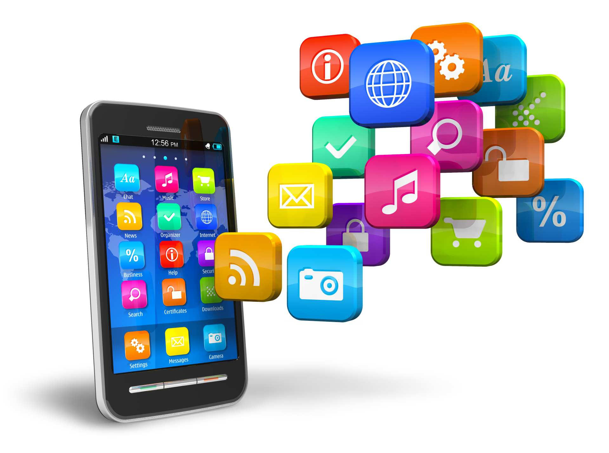

ย้อนวันวานกลับไปดู โทรศัพท์มือถือเครื่องแรกของโลกและสมาร์ทโฟนเครื่องแรกของโลก คือรุ่นไหน มีชื่อว่าอะไร และใครคือผู้ให้กำเนิด มือถือและสมาร์ทโฟนเครื่องแรกของโลก
ในขณะที่โลกทุกวันนี้เต็มไปด้วยโทรศัพท์มือถือที่มีชื่อเรียกว่า "สมาร์ทโฟน" จากหลากหลายแบรนด์ทั่วโลก มีให้เลือกหลายราคา พร้อมกับความสามารถที่ถูกพัฒนาเพื่อตอบโจทย์ผู้ใช้ที่ดีกว่าเดิมขึ้นทุกวัน แต่รู้หรือไม่ว่า ก่อนที่โลกจะรู้จักกับการสื่อสารที่สามารถพกพาติดตัวไปไหนมาไหนได้แบบในปัจจุบัน โทรศัพท์มือถือเครื่องแรกของโลกเพิ่งเกิดขึ้นเมื่อปี 1973 และสมาร์ทโฟนเครื่องแรกของโลกเพิ่งเกิดขึ้นเมื่อปี 1992
ย้อนกลับไปเมื่อวันที่ 3 เมษายน 1973 โลกเพิ่งจะได้รู้จักกับจุดเปลี่ยนของยุคสมัยแห่งการสื่อสาร เมื่อมาร์ติน คูเปอร์ วิศวกรอาวุโสแห่งบริษัทโมโตโรล่า ผู้ซึ่งได้รับการยกย่องให้เป็นบิดาแห่งโทรศัพท์มือถือ ได้สร้าง Motorola DynaTAC โทรศัพท์มือถือเครื่องแรกของโลก สำหรับ Motorola DynaTAC ตัวเครื่องมีความสูงถึง 9 นิ้ว ประกอบด้วย 30 แผงวงจร สามารถโทร. ได้นาน 35 นาที และต้องใช้เวลาชาร์จแบตเตอรี่นานถึง 10 ชั่วโมง แตกต่างจากมือถือในปัจจุบันที่ใช้เวลาชาร์จแบตเตอรี่แค่ 1-2 ชั่วโมงเท่านั้น Simon หรือ IBM Simon Personal Communicator เป็นสมาร์ทโฟนแบบทัชสกรีน ที่เกิดขึ้นจากความร่วมมือของ IBM และ Bellsouth ในปี 1992 ซึ่ง Simon นั้นใช้ระบบอินเทอร์เฟซแบบสัมผัสทั้งหมด ตัวเครื่องมีขนาดใหญ่สีดำ ไม่มีปุ่มกด ไม่มีแป้นพิมพ์ ใช้การจิ้มลงไปบนหน้าจอ และทาง IBM ได้วางขาย Simon ในสหรัฐอเมริกาเท่านั้น เปิดขายครั้งแรกเมื่อ 16 สิงหาคม 1994 และสามารถทำยอดขายได้สูงถึง 50,000 เครื่อง แต่ก็เลิกขายสมาร์ทโฟนรุ่นนี้ในเวลา 2 ปีเท่านั้น ส่วนหนึ่งน่าจะเป็นราคาที่สูงมากจนเกินไป โดยราคาอยู่ที่ 899 ดอลลาร์ (ประมาณ 30,000 บาท) ในสมัยนั้นถือว่าราคาสูงพอสมควร และที่สำคัญสมาร์ทโฟนรุ่นนี้แบตเตอรี่อยู่ได้เพียง 1 ชั่วโมงเท่านั้น
 
